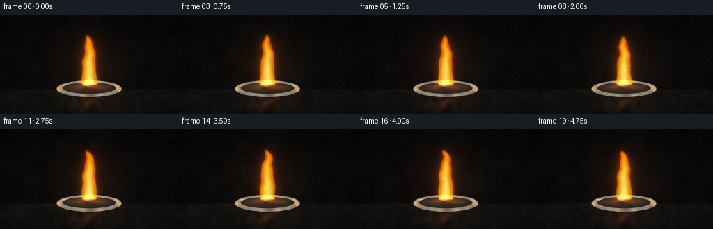
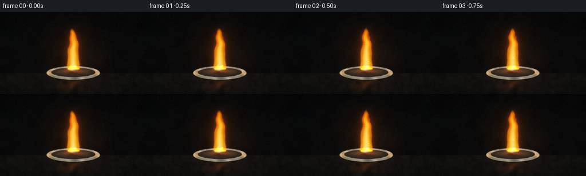
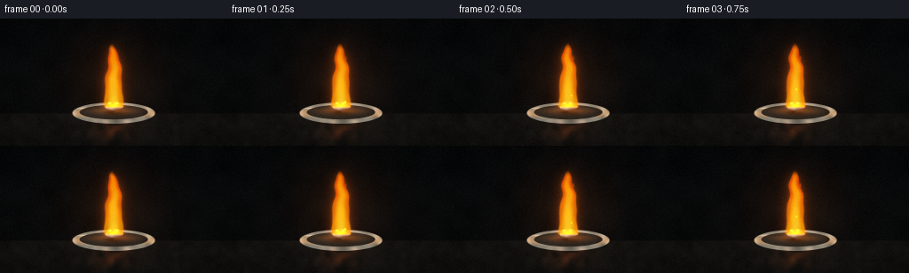
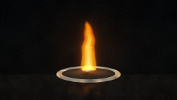
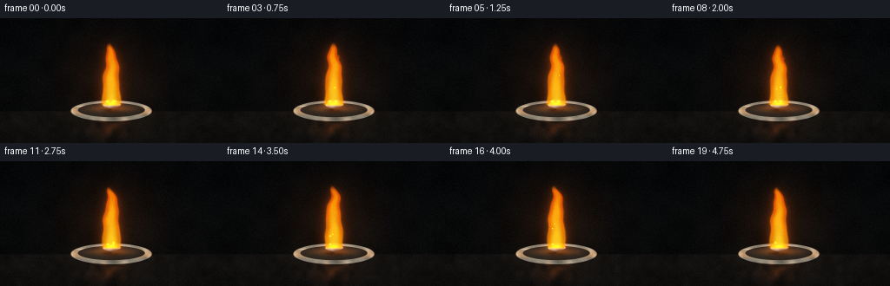

CODING AGENTS AS PIXEL WORLD MODELS
traex/DeepSeek-V4.1-Flash · phygen_129
点击播放 · 原生 RGB 像素
逐轮保存的候选
回放视频、检查图与代码变化。
每份候选均可单独播放。实际图片检查记录在下方工具轨迹中。
候选 01播放与检查图
点击播放 · 原生 RGB 像素


展开代码变化
--- 上一保存版本
+++ 本次保存版本
@@ -0,0 +1,396 @@
+from pathlib import Path
+import math
+
+import numpy as np
+from PIL import Image, ImageDraw
+from scipy.ndimage import gaussian_filter
+
+import artifact_io
+
+
+WIDTH = 256
+HEIGHT = 144
+FRAMES = 20
+FPS = 4.0
+SS = 4
+W = WIDTH * SS
+H = HEIGHT * SS
+CASE_DIR = Path(__file__).resolve().parent
+
+
+def smoothstep(edge0, edge1, value):
+ t = np.clip((value - edge0) / (edge1 - edge0), 0.0, 1.0)
+ return t * t * (3.0 - 2.0 * t)
+
+
+def mix(a, b, t):
+ t = np.asarray(t, dtype=np.float32)
+ if t.ndim == 2:
+ t = t[..., None]
+ return a * (1.0 - t) + b * t
+
+
+def composite(image, color, alpha):
+ alpha = np.clip(alpha, 0.0, 1.0)
+ if alpha.ndim == 2:
+ alpha = alpha[..., None]
+ return image * (1.0 - alpha) + np.asarray(color, dtype=np.float32) * alpha
+
+
+def add_light(image, color, amount):
+ amount = np.asarray(amount, dtype=np.float32)
+ if amount.ndim == 2:
+ amount = amount[..., None]
+ return image + np.asarray(color, dtype=np.float32) * np.maximum(amount, 0.0)
+
+
+def ellipse_distance(xx, yy, cx, cy, rx, ry):
+ return np.sqrt(((xx - cx) / rx) ** 2 + ((yy - cy) / ry) ** 2)
+
+
+def polygon_mask(points, blur=0.0):
+ mask = Image.new("L", (W, H), 0)
+ draw = ImageDraw.Draw(mask)
+ draw.polygon([(int(round(x * SS)), int(round(y * SS))) for x, y in points], fill=255)
+ array = np.asarray(mask, dtype=np.float32) / 255.0
+ if blur:
+ array = gaussian_filter(array, blur * SS)
+ return array
+
+
+def make_noise(seed, cells=(18, 10), blur=2.0):
+ rng = np.random.default_rng(seed)
+ small = rng.normal(0.0, 1.0, (cells[1], cells[0])).astype(np.float32)
+ image = Image.fromarray(np.uint8(np.clip((small + 2.5) / 5.0, 0, 1) * 255))
+ image = image.resize((W, H), Image.Resampling.BICUBIC)
+ noise = np.asarray(image, dtype=np.float32) / 255.0
+ noise = gaussian_filter(noise, blur * SS)
+ noise -= noise.mean()
+ noise /= max(noise.std(), 1e-5)
+ return noise
+
+
+NOISE_FINE = make_noise(11, (42, 24), 0.45)
+NOISE_SOFT = make_noise(19, (16, 9), 1.6)
+NOISE_SMOKE = make_noise(37, (28, 16), 0.8)
+
+
+def background(time):
+ yy, xx = np.mgrid[0:H, 0:W].astype(np.float32)
+ xn = xx / W
+ yn = yy / H
+
+ wall = np.stack(
+ (
+ 0.025 + 0.018 * yn,
+ 0.029 + 0.016 * yn,
+ 0.034 + 0.012 * yn,
+ ),
+ axis=2,
+ )
+ image = wall.copy()
+
+ # A dark stone bench gives the flame a believable plane to illuminate.
+ bench = smoothstep(0.738, 0.758, yn)
+ bench_color = np.stack(
+ (
+ 0.073 + 0.020 * (1.0 - yn),
+ 0.070 + 0.017 * (1.0 - yn),
+ 0.064 + 0.012 * (1.0 - yn),
+ ),
+ axis=2,
+ )
+ bench_texture = 0.006 * gaussian_filter(NOISE_FINE, 1.0 * SS)
+ bench_color += bench_texture[..., None]
+ image = mix(image, bench_color, bench)
+
+ # Soft studio falloff and a narrow horizon reflection.
+ radial = np.sqrt(((xn - 0.5) * 1.1) ** 2 + ((yn - 0.45) * 0.9) ** 2)
+ image *= (1.0 - 0.24 * smoothstep(0.28, 0.78, radial))[..., None]
+ horizon = np.exp(-((yn - 0.748) / 0.006) ** 2) * 0.018
+ image = add_light(image, (0.65, 0.59, 0.48), horizon)
+
+ # Very restrained out-of-focus lab ambience.
+ ambience = np.exp(-(((xn - 0.09) / 0.13) ** 2 + ((yn - 0.28) / 0.16) ** 2))
+ ambience += 0.55 * np.exp(-(((xn - 0.90) / 0.15) ** 2 + ((yn - 0.34) / 0.19) ** 2))
+ image = add_light(image, (0.15, 0.18, 0.19), 0.035 * ambience)
+
+ image += (0.0035 * NOISE_SOFT)[..., None]
+ return image
+
+
+def draw_dish(image, time):
+ yy, xx = np.mgrid[0:H, 0:W].astype(np.float32)
+ xn = xx / W
+ yn = yy / H
+
+ # Contact shadow under the watch glass.
+ shadow_d = ellipse_distance(xn, yn, 0.5, 0.780, 0.190, 0.052)
+ shadow = (1.0 - smoothstep(0.25, 1.12, shadow_d)) * 0.62
+ image *= (1.0 - 0.58 * gaussian_filter(shadow, 2.4 * SS))[..., None]
+
+ outer_d = ellipse_distance(xn, yn, 0.5, 0.742, 0.183, 0.084)
+ inner_d = ellipse_distance(xn, yn, 0.5, 0.735, 0.151, 0.057)
+ outer = 1.0 - smoothstep(0.975, 1.012, outer_d)
+ inner = 1.0 - smoothstep(0.975, 1.012, inner_d)
+ rim = np.clip(outer - inner, 0.0, 1.0)
+
+ # Off-white glazed ceramic with subtle cool shading.
+ rim_color = np.stack(
+ (
+ 0.57 + 0.13 * (1.0 - yn),
+ 0.56 + 0.12 * (1.0 - yn),
+ 0.51 + 0.10 * (1.0 - yn),
+ ),
+ axis=2,
+ )
+ rim_color *= (0.91 + 0.08 * NOISE_FINE)[..., None]
+ image = composite(image, rim_color, rim * 0.97)
+
+ cavity = np.stack(
+ (
+ 0.125 + 0.055 * (1.0 - yn),
+ 0.122 + 0.049 * (1.0 - yn),
+ 0.112 + 0.040 * (1.0 - yn),
+ ),
+ axis=2,
+ )
+ cavity += (0.012 * NOISE_SOFT)[..., None]
+ image = composite(image, cavity, inner * 0.92)
+
+ # Warm flame light wraps over the upper rim and inner glaze.
+ upper_rim = rim * smoothstep(0.675, 0.744, yn) * (1.0 - smoothstep(0.754, 0.790, yn))
+ image = add_light(image, (1.0, 0.48, 0.06), upper_rim * 0.25)
+ reflected = inner * np.exp(-(((xn - 0.5) / 0.095) ** 2 + ((yn - 0.725) / 0.026) ** 2))
+ image = add_light(image, (1.0, 0.42, 0.035), reflected * 0.31)
+
+ # Thin upper-left glaze highlight.
+ glint = np.exp(-((xn - 0.39 - 0.002 * math.sin(time)) / 0.075) ** 2) * np.exp(
+ -((yn - 0.705) / 0.0055) ** 2
+ )
+ image = add_light(image, (0.90, 0.84, 0.70), 0.30 * glint * rim)
+
+ # A few heat-darkened flecks under the metal.
+ fleck = np.exp(-((xn - 0.50) / 0.045) ** 2 - ((yn - 0.733) / 0.012) ** 2)
+ fleck *= smoothstep(0.15, 0.95, NOISE_SOFT + 0.15)
+ image = composite(image, (0.045, 0.036, 0.028), 0.45 * fleck * inner)
+ return image
+
+
+def draw_sodium(image, time):
+ yy, xx = np.mgrid[0:H, 0:W].astype(np.float32)
+ xn = xx / W
+ yn = yy / H
+
+ shadow_d = ellipse_distance(xn, yn, 0.5, 0.743, 0.055, 0.018)
+ shadow = 1.0 - smoothstep(0.3, 1.1, shadow_d)
+ image *= (1.0 - 0.45 * gaussian_filter(shadow, 1.4 * SS))[..., None]
+
+ # Irregular hand-cut sodium lump, wider than it is tall.
+ cx, cy = 128.0, 98.7
+ points = []
+ for k in range(36):
+ theta = 2.0 * math.pi * k / 36
+ radius_x = 9.4 * (1.0 + 0.12 * math.sin(3.0 * theta + 0.7) + 0.06 * math.sin(7.0 * theta))
+ radius_y = 5.1 * (1.0 + 0.10 * math.sin(2.0 * theta + 1.8) + 0.05 * math.sin(5.0 * theta))
+ points.append((cx + radius_x * math.cos(theta), cy + radius_y * math.sin(theta)))
+ lump = polygon_mask(points, 0.20)
+
+ # Metallic body with directional highlights and darker oxidized pits.
+ nx = np.clip((xx / SS - cx) / 10.0, -1.0, 1.0)
+ ny = np.clip((yy / SS - cy) / 5.5, -1.0, 1.0)
+ light = np.clip(0.54 - 0.25 * nx - 0.32 * ny, 0.06, 0.92)
+ metal = np.stack(
+ (
+ 0.29 + 0.46 * light,
+ 0.30 + 0.46 * light,
+ 0.29 + 0.43 * light,
+ ),
+ axis=2,
+ )
+ metal += (0.055 * NOISE_FINE)[..., None]
+ pits = smoothstep(0.8, 1.8, NOISE_SOFT) * 0.35
+ metal = mix(metal, (0.13, 0.12, 0.105), pits)
+ image = composite(image, metal, lump)
+
+ # A hot contact line and amber molten sheen at the flame base.
+ hot_line = lump * np.exp(-((yn - 0.689) / 0.010) ** 2) * (
+ 0.62 + 0.13 * math.sin(time * 2.1)
+ )
+ image = add_light(image, (1.0, 0.37, 0.025), 0.72 * hot_line)
+ rim_light = lump * smoothstep(-0.3, 0.9, -nx) * np.exp(-((ny + 0.15) / 0.65) ** 2)
+ image = add_light(image, (0.75, 0.73, 0.66), 0.19 * rim_light)
+ return image
+
+
+def flame_field(xn, yn, time, phase, height, base_y, width, x_shift=0.0):
+ t = (base_y - yn) / height
+ valid = (t >= 0.0) & (t <= 1.0)
+ tc = np.clip(t, 0.0, 1.0)
+
+ sway = (
+ 0.0085 * np.sin(3.8 * tc * math.pi + phase)
+ + 0.0042 * np.sin(7.7 * tc * math.pi - 0.6 * phase)
+ ) * tc**1.45
+ center = 0.5 + x_shift + sway
+ half_width = width * np.power(np.clip(1.0 - tc**1.75, 0.0, 1.0), 0.57)
+ half_width *= 1.0 + 0.07 * np.sin(5.1 * tc * math.pi + 1.2 * phase) * (1.0 - tc)
+
+ dx = xn - center
+ radial = np.abs(dx) / np.maximum(half_width, 1e-5)
+ body = np.clip(1.0 - radial, 0.0, 1.0)
+ body = smoothstep(0.0, 0.20, body)
+
+ top_fade = 1.0 - smoothstep(0.88, 1.0, tc)
+ base_fade = smoothstep(-0.04, 0.025, t)
+ edge_noise = 0.92 + 0.08 * np.sin(15.0 * tc + 2.1 * phase + 5.0 * radial)
+ body *= top_fade * base_fade * edge_noise * valid
+ core = np.exp(-((dx / np.maximum(half_width * 0.38, 1e-5)) ** 2)) * valid
+ core *= (1.0 - smoothstep(0.57, 0.91, tc)) * smoothstep(-0.02, 0.05, t)
+ return body, core, tc, radial, valid
+
+
+def draw_flame(image, time):
+ yy, xx = np.mgrid[0:H, 0:W].astype(np.float32)
+ xn = xx / W
+ yn = yy / H
+
+ # Background illumination is computed before the flame itself.
+ glow = np.exp(-(((xn - 0.5) / 0.19) ** 2 + ((yn - 0.48) / 0.34) ** 2))
+ image = add_light(image, (1.0, 0.39, 0.028), 0.085 * glow)
+
+ phase = 1.35 * math.sin(time * 1.3) + 0.45 * math.sin(time * 3.1 + 0.8)
+ height = 0.500 + 0.008 * math.sin(time * 2.0 + 0.5)
+ body, core, tc, radial, valid = flame_field(
+ xn, yn, time, phase, height, 0.695, 0.045, 0.0
+ )
+ body2, core2, tc2, radial2, valid2 = flame_field(
+ xn, yn, time + 0.17, phase + 1.7, height * 0.83, 0.694, 0.031, 0.006
+ )
+
+ body = np.maximum(body, 0.72 * body2)
+ core = np.maximum(core, 0.38 * core2)
+
+ outer_glow = gaussian_filter(body, 7.0 * SS)
+ inner_glow = gaussian_filter(body, 2.0 * SS)
+ image = add_light(image, (1.0, 0.31, 0.012), 0.44 * outer_glow)
+ image = add_light(image, (1.0, 0.53, 0.025), 0.25 * inner_glow)
+
+ outer_color = mix((1.0, 0.34, 0.008), (1.0, 0.69, 0.025), np.clip(1.0 - tc * 1.2, 0.0, 1.0))
+ image = add_light(image, (1.0, 1.0, 1.0), 0.0)
+ image = image * (1.0 - (body * 0.76)[..., None]) + outer_color * (body * 0.76)[..., None]
+
+ mid_color = mix((1.0, 0.62, 0.015), (1.0, 0.92, 0.22), np.clip(1.0 - tc, 0.0, 1.0))
+ mid_alpha = body * smoothstep(0.18, 0.80, 1.0 - radial) * 0.70
+ image = image * (1.0 - mid_alpha[..., None]) + mid_color * mid_alpha[..., None]
+
+ core_color = mix((1.0, 0.87, 0.22), (1.0, 0.985, 0.80), np.clip(1.0 - tc * 1.4, 0.0, 1.0))
+ core_alpha = np.clip(core * (0.54 + 0.08 * math.sin(time * 3.2)), 0.0, 0.82)
+ image = image * (1.0 - core_alpha[..., None]) + core_color * core_alpha[..., None]
+
+ # Hot root where the flame wraps the metal.
+ root = np.exp(-(((xn - 0.5) / 0.034) ** 2 + ((yn - 0.687) / 0.017) ** 2))
+ image = add_light(image, (1.0, 0.62, 0.10), 0.55 * root)
+ return image, body
+
+
+def draw_smoke(image, time):
+ yy, xx = np.mgrid[0:H, 0:W].astype(np.float32)
+ xn = xx / W
+ yn = yy / H
+
+ smoke = np.zeros((H, W), dtype=np.float32)
+ for k in range(6):
+ progress = (time * 0.075 + k * 0.17) % 1.0
+ center_y = 0.28 - progress * 0.25
+ center_x = (
+ 0.5
+ + 0.020 * math.sin(progress * 7.0 + k * 1.8 + time * 0.8)
+ + 0.055 * progress
+ )
+ sigma_x = 0.018 + 0.025 * progress
+ sigma_y = 0.010 + 0.022 * progress
+ puff = np.exp(-((xn - center_x) / sigma_x) ** 2 - ((yn - center_y) / sigma_y) ** 2)
+ puff *= 0.70 + 0.30 * smoothstep(-0.6, 0.9, NOISE_SMOKE)
+ puff *= math.sin(math.pi * progress) ** 0.7
+ smoke += puff
+
+ smoke = gaussian_filter(smoke, 1.8 * SS)
+ smoke *= (1.0 - smoothstep(0.10, 0.33, yn)) * smoothstep(0.08, 0.20, yn)
+ image = composite(image, (0.25, 0.245, 0.225), np.clip(0.11 * smoke, 0.0, 0.15))
+ return image
+
+
+def draw_sparks(image, time):
+ yy, xx = np.mgrid[0:H, 0:W].astype(np.float32)
+ xn = xx / W
+ yn = yy / H
+ rng = np.random.default_rng(802)
+
+ for _ in range(7):
+ delay = rng.uniform(0.0, 4.7)
+ age = max(0.0, time - delay)
+ life = rng.uniform(1.1, 2.2)
+ if age > life:
+ continue
+ u = age / life
+ start_x = rng.uniform(0.485, 0.515)
+ drift = rng.uniform(-0.030, 0.038)
+ rise = rng.uniform(0.20, 0.34)
+ px = start_x + drift * u + 0.006 * math.sin(age * 7.0 + start_x * 50.0)
+ py = 0.665 - rise * u
+ radius = (0.0015 + 0.0020 * (1.0 - u)) * (0.75 + 0.25 * math.sin(age * 12.0))
+ spark = np.exp(-(((xn - px) / radius) ** 2 + ((yn - py) / (radius * 1.7)) ** 2))
+ spark *= (1.0 - smoothstep(0.70, 1.0, u))
+ image = add_light(image, (1.0, 0.62, 0.08), 1.4 * spark)
+ image = add_light(image, (1.0, 0.45, 0.03), 0.28 * gaussian_filter(spark, 1.1 * SS))
+ return image
+
+
+def finish_frame(image, frame_index):
+ # Gentle lens bloom and a fine, stable sensor texture.
+ luminance = image.mean(axis=2)
+ bright = np.clip(luminance - 0.63, 0.0, 1.5)
+ bloom = gaussian_filter(bright, 5.0 * SS)
+ image = add_light(image, (1.0, 0.58, 0.12), 0.11 * bloom)
+
+ vignette_x = (np.arange(W, dtype=np.float32) / W - 0.5) * 2.0
+ vignette_y = (np.arange(H, dtype=np.float32) / H - 0.5) * 2.0
+ vignette = 1.0 - 0.10 * (vignette_x[None, :] ** 2 + 0.65 * vignette_y[:, None] ** 2)
+ image *= vignette[..., None]
+
+ rng = np.random.default_rng(1000 + frame_index)
+ grain = rng.normal(0.0, 0.0065, (HEIGHT, WIDTH, 1)).astype(np.float32)
+ image = image.reshape(HEIGHT, SS, WIDTH, SS, 3).mean(axis=(1, 3))
+ image += grain
+ return np.clip(image * 255.0 + 0.5, 0, 255).astype(np.uint8)
+
+
+def render_frame(frame_index):
+ time = frame_index / FPS
+ image = background(time)
+ image = draw_dish(image, time)
+ image = draw_sodium(image, time)
+ image, flame_body = draw_flame(image, time)
+ image = draw_smoke(image, time)
+ image = draw_sparks(image, time)
+
+ # Warm reflected flame on the bench, outside the dish.
+ yy, xx = np.mgrid[0:H, 0:W].astype(np.float32)
+ xn = xx / W
+ yn = yy / H
+ reflection = np.exp(-((xn - 0.5) / 0.080) ** 2) * smoothstep(0.755, 0.805, yn)
+ reflection *= np.exp(-((yn - 0.865) / 0.11) ** 2)
+ reflection *= 0.60 + 0.40 * NOISE_FINE
+ image = add_light(image, (1.0, 0.31, 0.018), 0.10 * reflection)
+
+ return finish_frame(image, frame_index)
+
+
+def main():
+ frames = np.stack([render_frame(i) for i in range(FRAMES)])
+ artifact_io.save(frames, CASE_DIR)
+
+
+if __name__ == "__main__":
+ main()
候选 02播放与检查图
点击播放 · 原生 RGB 像素


展开代码变化
--- 上一保存版本
+++ 本次保存版本
@@ -276,21 +276,20 @@
image = add_light(image, (1.0, 0.31, 0.012), 0.44 * outer_glow)
image = add_light(image, (1.0, 0.53, 0.025), 0.25 * inner_glow)
- outer_color = mix((1.0, 0.34, 0.008), (1.0, 0.69, 0.025), np.clip(1.0 - tc * 1.2, 0.0, 1.0))
- image = add_light(image, (1.0, 1.0, 1.0), 0.0)
- image = image * (1.0 - (body * 0.76)[..., None]) + outer_color * (body * 0.76)[..., None]
-
- mid_color = mix((1.0, 0.62, 0.015), (1.0, 0.92, 0.22), np.clip(1.0 - tc, 0.0, 1.0))
- mid_alpha = body * smoothstep(0.18, 0.80, 1.0 - radial) * 0.70
+ outer_color = mix((1.0, 0.29, 0.004), (1.0, 0.62, 0.012), np.clip(1.0 - tc * 1.2, 0.0, 1.0))
+ image = image * (1.0 - (body * 0.83)[..., None]) + outer_color * (body * 0.83)[..., None]
+
+ mid_color = mix((1.0, 0.54, 0.005), (1.0, 0.84, 0.045), np.clip(1.0 - tc, 0.0, 1.0))
+ mid_alpha = body * smoothstep(0.18, 0.80, 1.0 - radial) * 0.76
image = image * (1.0 - mid_alpha[..., None]) + mid_color * mid_alpha[..., None]
- core_color = mix((1.0, 0.87, 0.22), (1.0, 0.985, 0.80), np.clip(1.0 - tc * 1.4, 0.0, 1.0))
- core_alpha = np.clip(core * (0.54 + 0.08 * math.sin(time * 3.2)), 0.0, 0.82)
+ core_color = mix((1.0, 0.78, 0.055), (1.0, 0.94, 0.38), np.clip(1.0 - tc * 1.4, 0.0, 1.0))
+ core_alpha = np.clip(core * (0.34 + 0.055 * math.sin(time * 3.2)), 0.0, 0.52)
image = image * (1.0 - core_alpha[..., None]) + core_color * core_alpha[..., None]
# Hot root where the flame wraps the metal.
root = np.exp(-(((xn - 0.5) / 0.034) ** 2 + ((yn - 0.687) / 0.017) ** 2))
- image = add_light(image, (1.0, 0.62, 0.10), 0.55 * root)
+ image = add_light(image, (1.0, 0.54, 0.035), 0.40 * root)
return image, body
@@ -350,9 +349,9 @@
def finish_frame(image, frame_index):
# Gentle lens bloom and a fine, stable sensor texture.
luminance = image.mean(axis=2)
- bright = np.clip(luminance - 0.63, 0.0, 1.5)
+ bright = np.clip(luminance - 0.70, 0.0, 1.5)
bloom = gaussian_filter(bright, 5.0 * SS)
- image = add_light(image, (1.0, 0.58, 0.12), 0.11 * bloom)
+ image = add_light(image, (1.0, 0.50, 0.045), 0.075 * bloom)
vignette_x = (np.arange(W, dtype=np.float32) / W - 0.5) * 2.0
vignette_y = (np.arange(H, dtype=np.float32) / H - 0.5) * 2.0
可观测工具轨迹
实际执行的命令与返回图片。
命令 1exit 0
/bin/bash -c "pwd && rg --files -g 'GENERATION_RULES.md' -g 'task_spec.json' -g 'prompt.txt' -g '"'!*.mp4'"' -g '"'!*.webm'"'"
命令 2exit 0
/bin/bash -c "find . -maxdepth 2 -type f -printf '%p\\n' | sort | head -200"
命令 3exit 0
/bin/bash -c 'git status --short 2>/dev/null || true'
命令 4exit 0
/bin/bash -c 'cat GENERATION_RULES.md'
命令 5exit 0
/bin/bash -c 'cat task_spec.json'
命令 6exit 0
/bin/bash -c 'cat prompt.txt'
命令 7exit 0
/bin/bash -c "sed -n '1,260p' artifact_io.py"
命令 8exit 0
/bin/bash -c "python - <<'PY'
import importlib.util
for name in ['numpy','PIL','scipy','cv2','imageio','matplotlib']:
print(name, bool(importlib.util.find_spec(name)))
PY"命令 9exit 0
/bin/bash -c "python - <<'PY'
from PIL import Image
print('Pillow ok')
PY"命令 10exit 1
/bin/bash -c 'python generate.py'
命令 11exit 0
/bin/bash -c 'python generate.py'
命令 12exit 0
/bin/bash -c "python - <<'PY'
from PIL import Image
import numpy as np
for f in [0,10,19]:
a=np.asarray(Image.open(f'frames/{f:02d}.png')).astype(float)
m=a.mean(2)
print(f, 'mean', a.mean((0,1)), 'flame mean', a[m>180].mean(0), 'max', a.max(), 'p99',np.percentile(a,99), 'bright pixels', (m>220).sum())
for y,x in [(55,128),(70,128),(85,128),(50,125),(60,120)]: print((x,y),a[y,x])
PY"命令 13exit 0
/bin/bash -c 'python generate.py'
命令 14exit 0
/bin/bash -c "python - <<'PY'
from PIL import Image
import numpy as np
for f in [0,10,19]:
a=np.asarray(Image.open(f'frames/{f:02d}.png')).astype(float)
print(f,'p99',np.percentile(a,99),'bright', (a.mean(2)>220).sum(), 'flame center',a[70,128], 'edge',a[70,115])
PY"命令 15exit 0
/bin/bash -c "python - <<'PY'
from PIL import Image
import numpy as np, json
from pathlib import Path
p=Path('.')
files=sorted((p/'frames').glob('*.png'))
a=np.stack([np.asarray(Image.open(f)) for f in files])
print('frames',a.shape,a.dtype,'range',a.min(),a.max())
d=np.abs(np.diff(a.astype(np.int16),axis=0))
print('frame delta mean/max/p99',d.mean(),d.max(),np.percentile(d,99))
print('unique consecutive frames', [bool(np.any(a[i]"'!=a[i+1])) for i in range(len(a)-1)])
print('"'pixels', np.load('pixels.npz')['pixels'].shape)
print('index bytes', (p/'index.html').stat().st_size)
PY"命令 16exit 0
/bin/bash -c 'git status --short -- generate.py prompt.txt task_spec.json GENERATION_RULES.md artifact_io.py player_template.html frames pixels.npz inspection.png transition_check.png index.html 2>/dev/null || true'
视觉工具实际返回图片 1

视觉工具实际返回图片 2

视觉工具实际返回图片 3

保存候选 2 份；完成命令 16 次；可验证图片返回 3 张。原始 API 响应与完整日志保留在本地。